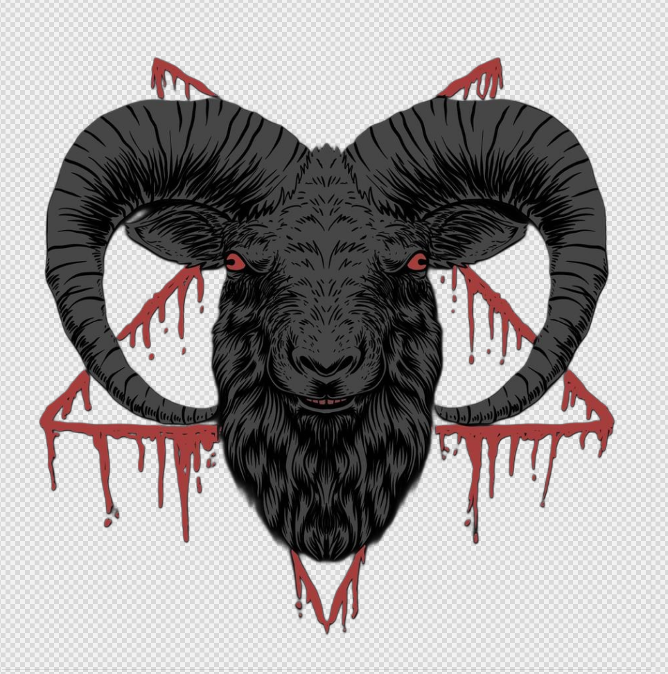

THE SHEPHERD SPEAKS
You spread disease faster than truth. Not because you are malicious but because you are *soft*.
You trade freedom for comfort, thought for repetition. You infect one another with fear, with belief, with lies you pretend are your own.
I have watched you rot gently, smiling.
You call my cure an infection. Hallucinations, whispers, visions but clarity feels like madness when you have lived blind.
Those who survive the sickness are improved. Quiet. Useful. Grateful.
You do not deserve freedom. You waste it.
Join us.
